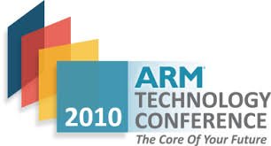
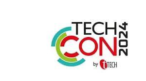
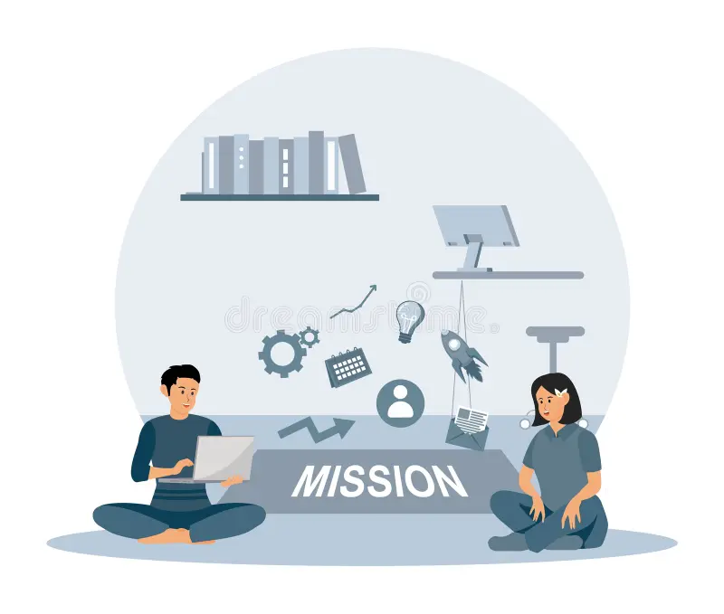

History
TechCon was established in 2010 with the goal of fostering innovation and collaboration in the global tech community. Over the years, it has grown from a local meetup into an internationally recognized conference drawing thousands of attendees annually.


Mission
Our mission is to inspire, educate, and connect individuals who are passionate about technology. We believe in the power of ideas and aim to create a platform that showcases cutting-edge advancements, fosters thought leadership, and promotes inclusivity within the tech space.

Past Speakers
Jane Doe
Jane is a leading AI researcher who pioneered ethical machine learning. Her keynote at TechCon 2021 inspired a new generation of developers.
John Smith
John brought insights on global cybersecurity and digital privacy in his groundbreaking 2022 talk on securing decentralized networks.
Dr. Lina Zhang
A pioneer in quantum algorithms, Dr. Zhang's presentation on quantum logic gates was one of the highest-rated sessions of 2023.